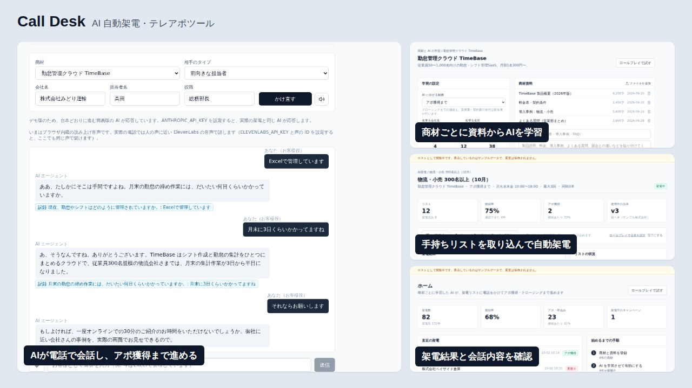

01 / Challenge
テレアポは件数をこなす必要がある一方で、断られ続ける負担が大きく、話し方も担当者ごとにばらつく。商材ごとの売れるトークを、誰でも同じ品質で大量の架電に使えるようにしたい。
Work / 2026
商材ごとに学習したAIが、手持ちの架電リストに電話をかけ、受付突破・ヒアリング・切り返しからアポ獲得（またはクロージング）まで自動で進めるテレアポツール。

テレアポは件数をこなす必要がある一方で、断られ続ける負担が大きく、話し方も担当者ごとにばらつく。商材ごとの売れるトークを、誰でも同じ品質で大量の架電に使えるようにしたい。
利用者が商材と説明資料（テキスト・PDF）を登録すると、AIが資料・人の営業の通話分析・受注した通話・過去のAI架電の結果から、商材専用の台本（プレイブック）を作る。人が内容を確認して有効にすると、AIが架電リスト（ExcelやCSVをそのまま取り込み）に順番に電話をかけ、冒頭でAIであることと録音を告げたうえで、受付突破・ヒアリング・切り返し・日程調整まで会話する。相づちでは話を止めず、相手が話し始めたら止めて聞く。2回断られたら引き、「電話しないで」と言われたら架電停止リストに登録する。電話をかける前に、ブラウザ上で自分がお客様役になって声で試せるロールプレイ画面もある。
Next.js（App Router）/ React / TypeScript / Tailwind CSS。会話は Claude API（ストリーミングとツール呼び出しで、日程提示・アポ登録・転送・資料検索などを実行）。電話は Twilio Media Streams、音声認識は Deepgram、音声合成は ElevenLabs。資料検索は OpenAI Embeddings と pgvector。データと認証は Supabase。通話は常時起動の Node.js ワーカーで処理する。
デモはログイン画面から始まり、「ログインせずにゲストとして使う」でサンプルデータの全画面（ホーム・架電キャンペーン・商材とAIの学習・ロールプレイ）を操作できます。スマホにも対応しています。デモのAIは台本どおりに進む簡易版で、実際の運用では Claude が応答します。